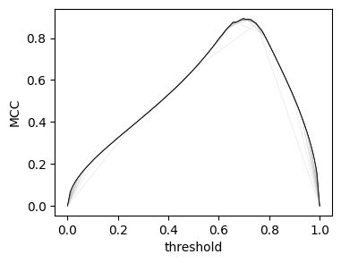
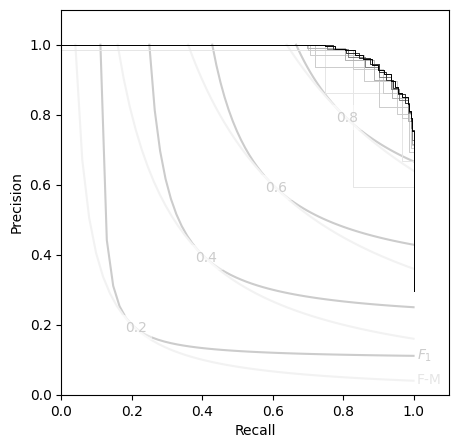

Performance¶
When datasets become increasingly large, the number of unique thresholds can grow significantly.
To maximize performance, we rely on numpy's "broadcasting" feature to perform operations using its C-backend, rather than Python.
Vectorize & Memoize¶
Because looping in python is slow, we rely on boolean matrix operations to calculate the contingency counts. At the core of Contingent.from_scalar is a call to numpy.less_equal.outer, which broadcasts the thresholding operation over all possible levels simultaneously.
This is reasonably fast, able to calculate e.g. APS only marginally slower than the scikit-learn implementation. In addition, the one-time calculation of the "full" contingency set has the added benefit of amortizing the cost of subsequent metric calculations significantly.
Let's make a much larger test case than before, by adding white noise to a known ground-truth.
rng = np.random.default_rng(24) # (1)!
y_src = rng.random(1000)
y_true = y_src>0.7
y_pred = y_src + 0.05*rng.normal(size=1000)
- Did you know? 24mph is the cruising airspeed velocity of an unladen (european) swallow
from sklearn.metrics import average_precision_score, matthews_corrcoef
%timeit average_precision_score(y_true, y_pred)
%timeit Contingent.from_scalar(y_true, y_pred).expected('aps')
Mbig = Contingent.from_scalar(y_true, y_pred)
%timeit Mbig.expected('aps')
1.07 ms ± 231 μs per loop (mean ± std. dev. of 7 runs, 1,000 loops each)
2.83 ms ± 55.4 μs per loop (mean ± std. dev. of 7 runs, 100 loops each)
30.3 μs ± 341 ns per loop (mean ± std. dev. of 7 runs, 10,000 loops each)
This means that, with a single Contingent object, all of the various metrics can be calculated from then on in mere microseconds.
And when scikit-learn does not have optimized aggregation functions, Contingent can continue on just as well.
Say you wish to find the expected value of the MCC score over all thresholds; using a Contingent object results in an order of magnitude speed increase.
1.36 s ± 576 ms per loop (mean ± std. dev. of 7 runs, 1 loop each)
176 μs ± 10.9 μs per loop (mean ± std. dev. of 7 runs, 10,000 loops each)
Tip
This is one of the key features of contingency!
If you have many individual datasets or runs, and you want to compare cross-threshold metrics (like APS) over many experiments, needing over a second per-run can add up quickly! This is a common problem in feature engineering and model selection pipelines.
For an example, see the MENDR benchmark, where tens of thousands of individual prediction arrays need to be systematically compared via APS and expected MCC.
Using the mean of many matthews_corrcoef calls would take a very long time, if not for the optimizations made by contingency!
Subsampling Approximation¶
The limit to this amortization comes from your RAM: the outer-product matrix we use to vectorize contingency counting can get huge.
To mitigate this, Contingent.from_scalar has a subsamples option which allows you to approximate the threshold values with an interpolated subset distributed according to the originals.
With only a few subsamples, the score curves quickly converge to their "true" values.
# rng.normal(
plt.figure(figsize=(4,3))
for subs in (5,10,15, 20, 25, 30,50,75,100):
plt.plot(
np.linspace(0,1,subs),
(Contingent.from_scalar(y_true, y_pred, subsamples=subs)).mcc,
lw=0.5, color=f'{1-subs/100:.1f}'
)
plt.ylabel('MCC')
plt.xlabel('threshold');

Likewise, the P-R curves:
plt.figure(figsize=(5,5))
PR_contour()
for subs in (5,10,15, 20, 25, 30,50,75,100):
Msubs = Contingent.from_scalar(y_true, y_pred, subsamples=subs)
plt.step(Msubs.recall, Msubs.precision, lw=0.7, color=f'{1-subs/100:.1f}', where='post')

This allows Contingent objects to handle some quite large datasets:
y_src = rng.random(int(1e6))
y_true = y_src>0.7
y_pred = y_src + 0.05*rng.normal(size=int(1e6))
# from sklearn.metrics import average_precision_score, matthews_corrcoef
%timeit average_precision_score(y_true, y_pred)
%timeit Contingent.from_scalar(y_true, y_pred, subsamples=200)
M200 = Contingent.from_scalar(y_true, y_pred, subsamples=200)
%timeit M200.expected('aps')
511 ms ± 21 ms per loop (mean ± std. dev. of 7 runs, 1 loop each)
678 ms ± 203 ms per loop (mean ± std. dev. of 7 runs, 1 loop each)
28 μs ± 411 ns per loop (mean ± std. dev. of 7 runs, 10,000 loops each)
print(
'{:.4g}'.format(average_precision_score(y_true, y_pred)),
'{:.4g}'.format(M200.expected('aps'))
)
0.9865 0.9858